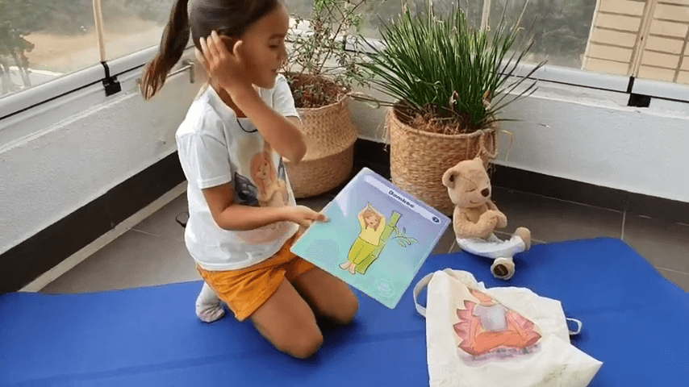

Hoy Luz ha preparado un nuevo video junto a su amigo Teddy, para mostrarles la postura del Bamboo 🎋 (Ardha Chandrasana).
Esta postura nos ofrece muchos beneficios entre los cuales destacamos:
- Fortalece los brazos
- Fortalece las piernas
- Nos ofrece paz y tranquilidad mental.
- Alivia el estrés
- Es una postura muy buena para la espalda. La hace más flexible
- Los abdominales también trabajan y se fortalecen
- Los glúteos ganan masa muscular y se quema grasa
- Mejora el equilibrio y aprendes a coordinar mejor las distintas partes del cuerpo
Repite está postura 5 veces por cada lado. Siempre manteniendo una respiración tranquila, no vayas demasiado rápido.
💜 Si te ha gustado este video te invitamos a darnos un Like y a compartirlo para que más niños y niñas aprendan está nueva postura de Yoga.
Saludos,
Luz
